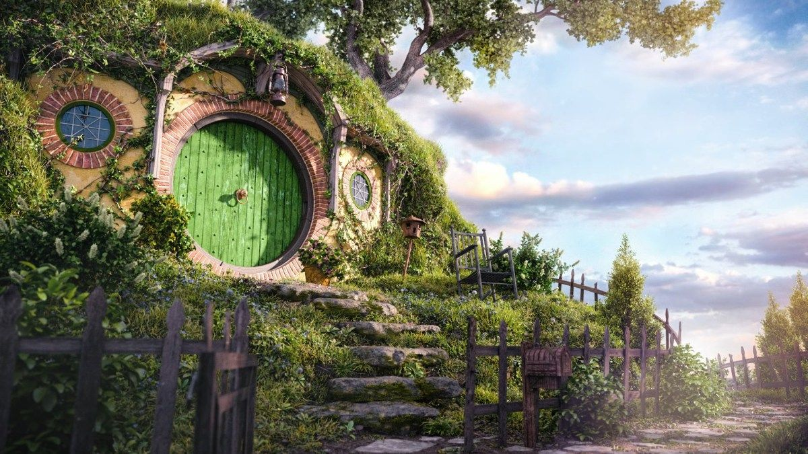
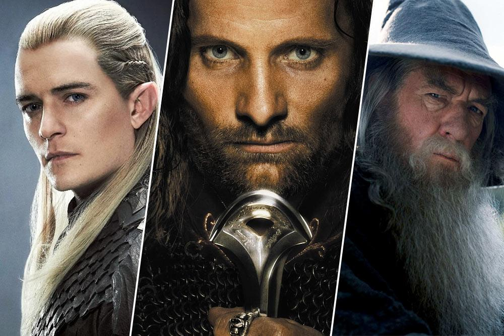
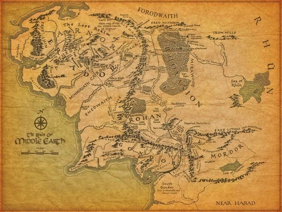

¡Bienvenidos a la Tierra Media, viajeros intrépidos! Sumérgete en un mundo de magia, aventura y épica con nuestra web inspirada en la legendaria obra de J.R.R. Tolkien, "El Señor de los Anillos". Desde los verdes campos de la Comarca hasta las majestuosas torres de Minas Tirith, te invitamos a explorar cada rincón de este universo rico y fascinante. Ya seas un erudito de la historia de la Tierra Media o un aventurero novato, encontrarás aquí un sinfín de recursos para satisfacer tu curiosidad y avivar tu pasión por este mundo creado por el genio literario de Tolkien. Desde artículos detallados sobre los personajes y lugares más emblemáticos hasta análisis profundos de las diferentes razas y culturas que pueblan esta tierra fantástica, nuestra web está diseñada para ser tu guía definitiva en tu viaje a través de la Tierra Media. Adéntrate en las páginas de nuestros libros virtuales y déjate transportar a lugares donde los hobbits, elfos, enanos y hombres luchan juntos contra las fuerzas oscuras que amenazan con sumir a este mundo en la sombra. Descubre los secretos ocultos en los pergaminos antiguos y desentraña los misterios que rodean al Anillo Único, cuyo destino está ligado al destino mismo de la Tierra Media. Únete a nosotros en esta emocionante aventura mientras exploramos los rincones más remotos de la Tierra Media y celebramos el legado perdurable de "El Señor de los Anillos". ¡Bienvenidos a nuestro sitio web, donde los sueños se entrelazan con la realidad y la magia nunca termina!
Adéntrate en el vasto mundo de "El Señor de los Anillos" y conoce a sus emblemáticos personajes, cuyas historias se entrelazan en una epopeya de amistad, coraje y sacrificio. Cada personaje en "El Señor de los Anillos" es una pieza crucial en el tablero de ajedrez de la historia, y juntos, enfrentan desafíos inimaginables en su lucha por preservar la libertad y la esperanza en un mundo amenazado por la sombra. ¡Prepárate para embarcarte en un viaje inolvidable junto a estos inolvidables héroes y villanos!
Embárcate en un viaje a través de los paisajes épicos y las tierras mágicas de "El Señor de los Anillos". Desde la serena Comarca, hogar de los pacíficos hobbits, hasta las oscuras y tenebrosas tierras de Mordor, donde acecha el poder del mal, cada lugar en este universo es una ventana a un mundo de maravillas y peligros. Explora la majestuosidad de Rivendel, el refugio de los elfos, donde la belleza y la sabiduría se entrelazan en armonía. Maravíllate ante la grandeza de Minas Tirith, la ciudadela de los hombres, que se alza imponente sobre las tierras de Gondor, defendiendo a la Tierra Media de las fuerzas de la oscuridad. Únete a nosotros en este viaje inolvidable a través de los lugares de "El Señor de los Anillos", donde la magia y la aventura aguardan en cada esquina y donde el destino de la Tierra Media pende de un hilo. ¡Prepárate para explorar un mundo lleno de maravillas y peligros que te dejará sin aliento!